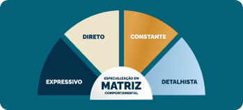
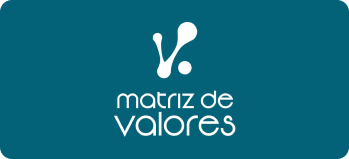
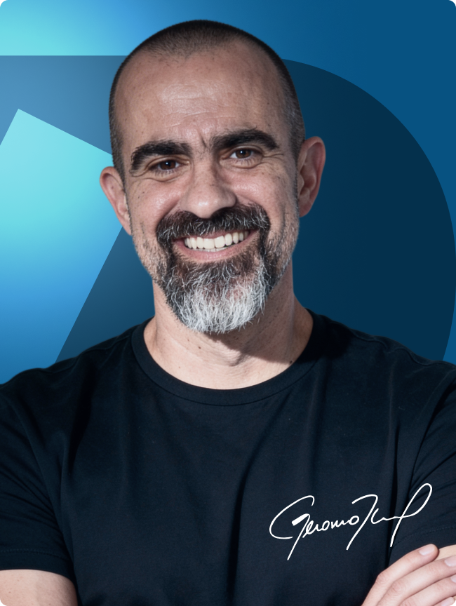

E
Expressivo
Aqueles dotados de grande carisma e poder de persuasão, que inspiram pessoas.
E por uma condição ÚNICA E EXCLUSIVA do Protocolo 6%.
GARANTA SUA VAGA AGORADe estagnado profissionalmente a 3 promoções para cargos de chefia e 6x a renda que tinha antes.
Bancário que iniciou no Coaching como renda extra realiza transição total de carreira: "Cada cliente hoje é um mês de salário que eu ganhava."
Cirurgião oncológico descobre no Coaching como liderar equipe, migrar para o particular e ainda operar de graça quem não pode pagar.
De frustrada profissionalmente para carreira com faturamento mensal de +R$ 30.000: "Me encontrei sendo quem eu sou."
De gestora de liderança a Coach que cobra R$ 5.000 por processo e fecha contratos de R$ 100.000.
Descobriu como ser uma gestora de grandes resultados, fez transição de carreira para o Coaching e hoje fatura 4x mais do que antes.
8 meses depois da FCC, pediu demissão e encerrou negócio próprio para viver de Coaching: "Faturo 10x mais do que com 2 fontes de renda antes."
Não é à toa que resultados como esses são o padrão dos nossos alunos e alunas. Nem que o IGT seja hoje a escola que forma os Coaches mais bem pagos do mercado.
O IGT tem 99,4% de aprovação dos alunos. O que explica tamanho índice em uma escola que já formou milhares de pessoas? Metodologia. Preparo. Prática.
Em apenas 8 dias, você sai pronto para aplicar o Coaching Criacional. Sem enrolação.
E ainda leva um certificado internacional, para você atuar em qualquer parte do mundo, se assim desejar.
GARANTA SUA VAGA AGORAPara quem quer ter uma nova profissão e poder trabalhar de qualquer lugar do mundo, só precisando de um computador e acesso à internet — e potencial de faturar mais de R$ 10.000/mês.
Normalmente, é aquela pessoa que não está feliz com sua carreira atual ou está desempregada, em busca de uma nova profissão.
Como foi o caso da Clarissa Boeira, que passou a ganhar mais com 1 processo de Coaching do que o salário do mês inteiro no emprego anterior.
Só pra você ter uma ideia, há 4 anos ela é Coach de agenda lotada e já chegou a atender 24 clientes ao mesmo tempo.
Isso também aconteceu com a Laíse Vieira, que relatou que o maior ganho para ela, vivendo de coaching, foi poder passar mais tempo com o filho de 7 meses.
GARANTA SUA VAGA AGORAÉ aquela pessoa que quer trabalhar nas horas vagas sem precisar fazer uma transição de carreira. E são inúmeros casos assim.
O Rafael Serpa, por exemplo, que é Servidor Público e mantém o Coaching como 2ª profissão, atendendo dezenas de clientes.
O Hérveton Sobrinho é outro. Ele estava estagnado em seu cargo público quando entrou na FCC.
Depois disso, ganhou 3 promoções para cargos de chefia (triplicando seu salário) e passou a trabalhar como Coach nas horas vagas — o que lhe rende ganhos iguais ao seu salário fixo.
GARANTA SUA VAGA AGORAO profissional que foi promovido porque entregava resultado. Mas que nunca aprendeu a fazer o time entregar. Cobra, incentiva, dá feedback, e o resultado não vem. Não é culpa sua. É que liderar pessoas é uma técnica, e técnica tem método.
Não é por acaso que empresas multinacionais, como a Ernst & Young, passaram a treinar literalmente todos os seus líderes em Coaching.
Não é à toa, também, que Eric Schmidt, ex-presidente do Google, e Bill Gates afirmam que "todo mundo precisa de um Coach". Coach transforma chefes em líderes. E líderes transformam resultados medíocres em extraordinários.
Olha o caso da nossa aluna Paulinha: depois da FCC, ela bateu sua meta do ano em menos de 6 meses e hoje treina outros líderes para terem resultados tão expressivos quanto os que teve.
GARANTA SUA VAGA AGORAEu não sei qual é o problema que te mantém na média hoje. Mas, até conhecer o Coaching, a minha vida era sobreviver por mais um dia numa carreira que me aprisionava. Que contaminava, uma a uma, todas as áreas da minha existência.
Hoje, posso dizer que, graças a essa Metodologia, eu me tornei outra pessoa: com uma carreira fora da média, um dinheiro fora da média, um casamento fora da média, com a saúde aos 52 melhor que aos 30, com filhos fora da média. E não sou um caso isolado.
O Felipe Pereira, em 3 meses, perdeu 10 kg de forma saudável e bateu seu recorde de vendas na empresa. O Jefferson Silva em 20 dias perdeu 4 kg e foi promovido a um cargo de gerência. A Regina Borges, que temia ser demitida, passou a ser reconhecida e colocada em projetos importantes. São literalmente milhares de alunos com resultados como esses.
GARANTA SUA VAGA AGORAExistem 4 matrizes comportamentais:
Aqueles dotados de grande carisma e poder de persuasão, que inspiram pessoas.
Aqueles dotados de extrema autoconfiança, que se dão bem com desafios e dificuldades.
Estáveis, pacientes e leais, de ritmo constante e alto grau de conservadorismo.
Organizados e responsáveis, hábeis em controlar processos e rotinas repetitivas.
Para que uma pessoa possa se destacar em sua função, é preciso que ela tenha o perfil adequado. E, se ela não tiver, é possível que certas habilidades sejam desenvolvidas. É aí que você entra em ação!
Com a Especialização em Matriz Comportamental, o Coach consegue monetizar as análises de matriz comportamental, além de poder oferecer um processo de coaching com foco no resultado almejado. E o melhor disso tudo?
Esse é um bônus da Formação em Coaching Criacional. Assim que você concluir a sua inscrição, você ganhará esse presente de forma 100% gratuita!
GARANTA SUA VAGA AGORAQuando eu era Advogado da União ganhando R$ 21.000 por mês, quase todo mundo achava que eu tava feito. Mas eu definhava por dentro. E não entendia por quê.
Foi numa sessão de coaching que descobri: meus valores eram Desafio e Contribuição. E no emprego público, eu não tinha nem um nem outro.
Entender isso MUDOU tudo.
A Matriz de Valores mapeia o seu "por quê": o que verdadeiramente te move, o que te paralisa, o que te faz reagir de formas que você mesmo não entende.
Como Coach, quando você identifica os valores do seu cliente, liderado ou de você mesmo, você sabe exatamente onde está a trava (e como destravá-lo).
Essa especialização é sua, gratuitamente, ao concluir sua inscrição na FCC.
GARANTA SUA VAGA AGORAAssim que você finalizar sua Formação, você terá acesso a uma mentoria por mês, durante o período de 6 meses, com um Trainer do IGT International Coaching.
Ou seja, você poderá tirar todas as suas dúvidas sobre o Coaching Criacional, a Metodologia, as Ferramentas e os atendimentos com seus clientes e/ou liderados.
Uma hora de um dos nossos trainers custa R$ 1.200,00 — e você terá 6 encontros.
Isso significa que, além do desconto de 50% + as Especializações em Matriz Comportamental e Matriz de Valores, você ainda ganha este presente de R$ 7.200.
Tudo para garantir que você transforme sua vida com o Coaching para sempre!
GARANTA SUA VAGA AGORAForme-se junto com os Coaches mais bem pagos do mercado. Comece do absoluto zero e saia em 8 dias pronto para aplicar o Coaching Levado a Sério na sua vida e sua carreira.

Desenvolva uma visão verdadeiramente profunda de como cada pessoa funciona (inclusive você), e leve o potencial de cada projeto para o próximo nível.

Tenha clareza que 99,9% das pessoas não têm sobre os valores que pautam a sua vida e a vida dos outros. Aqui, você aprende a desenvolver planos alinhados a eles.
Economize anos de experiência com essa especialização, e comece atendendo com a segurança dos Coaches mais bem pagos e experientes do mercado.
Receba todo o suporte e esclarecimento de dúvidas pra aplicação do Coaching Levado a Sério em mentorias com os melhores Coaches do mercado.
Receba na sua casa, em qualquer endereço do Brasil e sem nenhum custo adicional, o material completo pra você ter uma experiência única e diferenciada, que levará pra toda a vida.
A oportunidade que você tem hoje na sua frente não é uma mera promessa, como você vê todos os dias na internet. Também não é mais um curso, que você vai comprar empolgado, fazer um pouco e largar para nunca mais abrir de novo.
A Formação em Coaching Criacional é, como o próprio nome diz, uma formação.
Uma formação robusta, profundamente validada por CEOs, líderes, Coaches, médicos, advogados... todas as profissões que você pode imaginar. O índice de aprovação de 99,4% não me deixa mentir.
A comparação mais próxima que eu consigo ver é um MBA. E, sendo bastante sincero aqui, dificilmente você encontra um bom hoje por menos de R$ 30.000.
Mas eu sei o nível de transformação que o Coaching Levado a Sério gera nas pessoas. Eu sei como o crescimento dessa metodologia é positivo para mim, para você, para os seus clientes, para a sua empresa, para a sua família, para toda a sociedade.
Não é à toa que Jack Welch, considerado um dos maiores executivos de todos os tempos, disse que "no futuro, todo líder será Coach – ou será varrido do mercado."
Por isso, eu ofereço sempre uma condição especial para quem deseja entrar (menos de R$ 10.000).
Só que você participou do Protocolo 6%. Você já mostrou que quer gerar resultados fora da curva na sua vida. E eu não preciso gastar um centavo para te provar isso. Afinal, você já está aqui.
Então SÓ HOJE, NESTA CONDIÇÃO EXCLUSIVA PARA O Protocolo 6%, você não vai precisar investir R$ 30.000 de um MBA... ou os R$ 10.000 que meus alunos costumam me pagar.
GARANTA SUA VAGA AGORAGeronimo Theml é escritor Best-seller, palestrante internacional e referência no desenvolvimento humano há mais de 20 anos. Como Coach e treinador, já impactou dezenas de milhares de pessoas com seus treinamentos transformadores.
Ex-advogado da União, tomou a decisão ousada de deixar a estabilidade do serviço público para seguir sua missão: ajudar pessoas a destravarem seu verdadeiro potencial e construírem uma vida de propósito e realização.
Além de sua atuação no Coaching, é fundador do Instituto O Bem Nunca Para e idealizador do Movimento Dia Mundial Sem Fome, uma iniciativa que apoia a distribuição de alimentos no dia 16 de outubro – data reconhecida pela ONU como o Dia Mundial da Alimentação.
